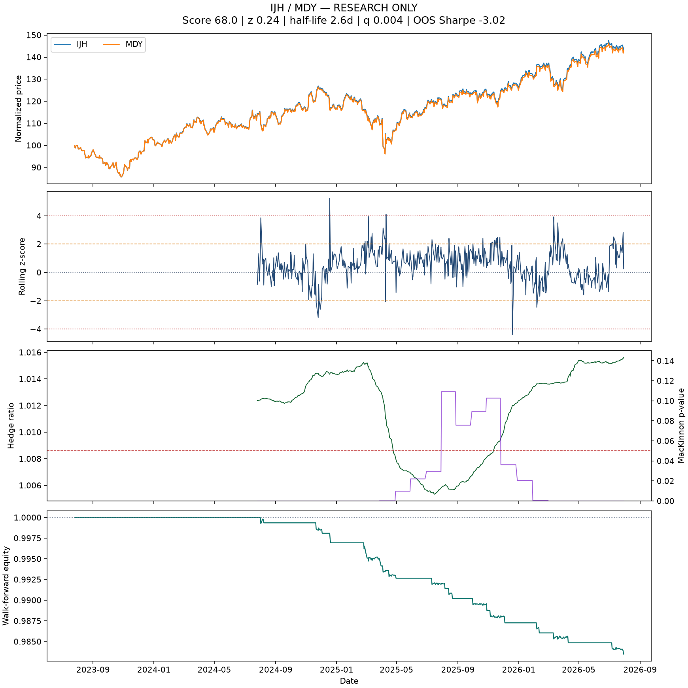
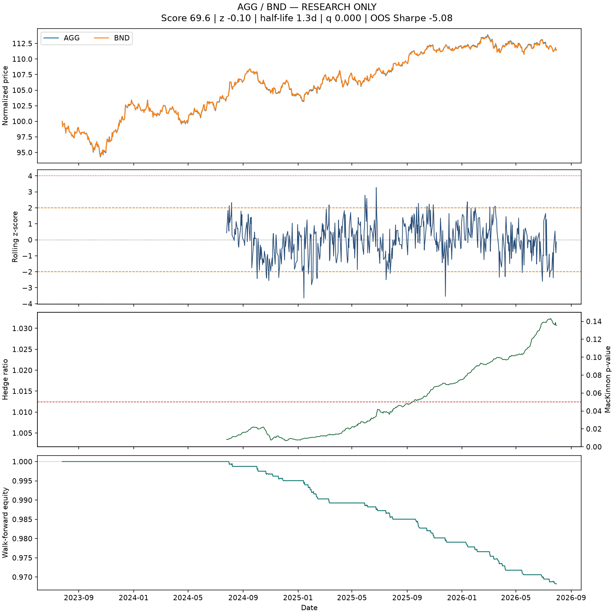
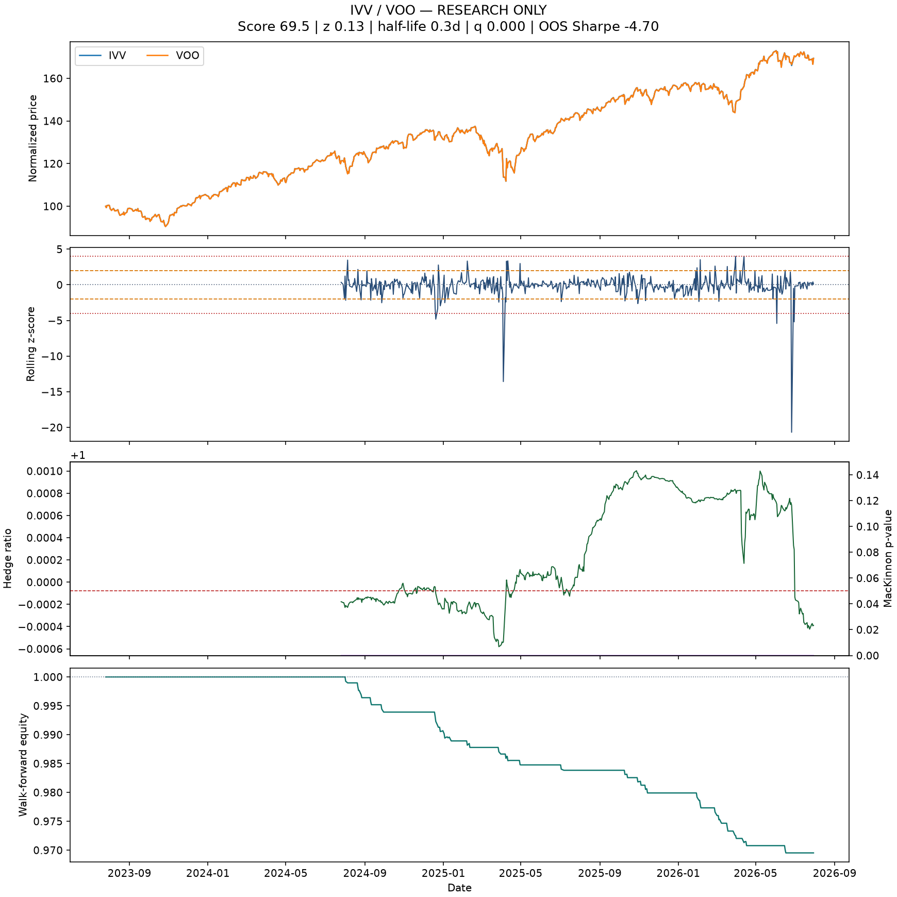
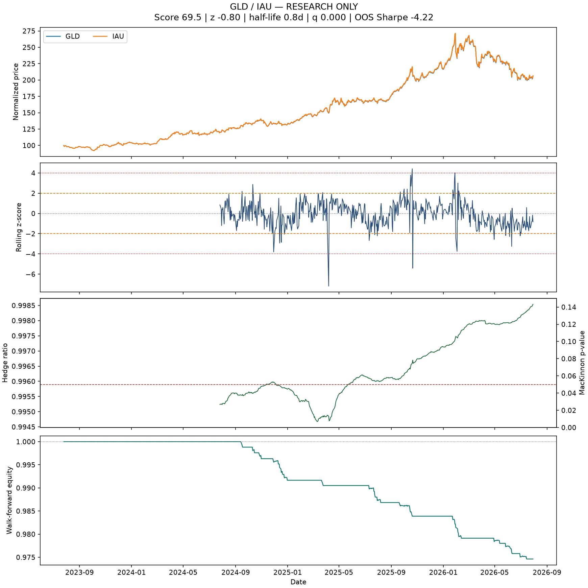
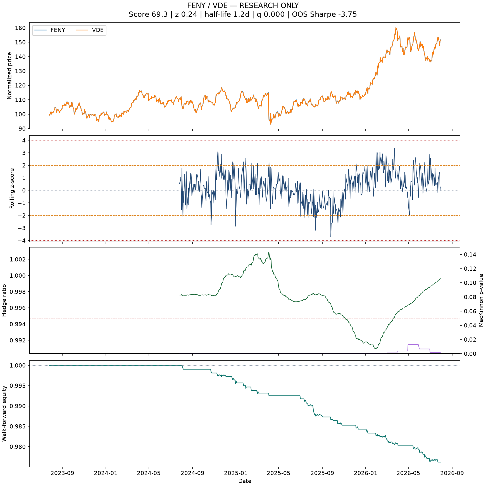
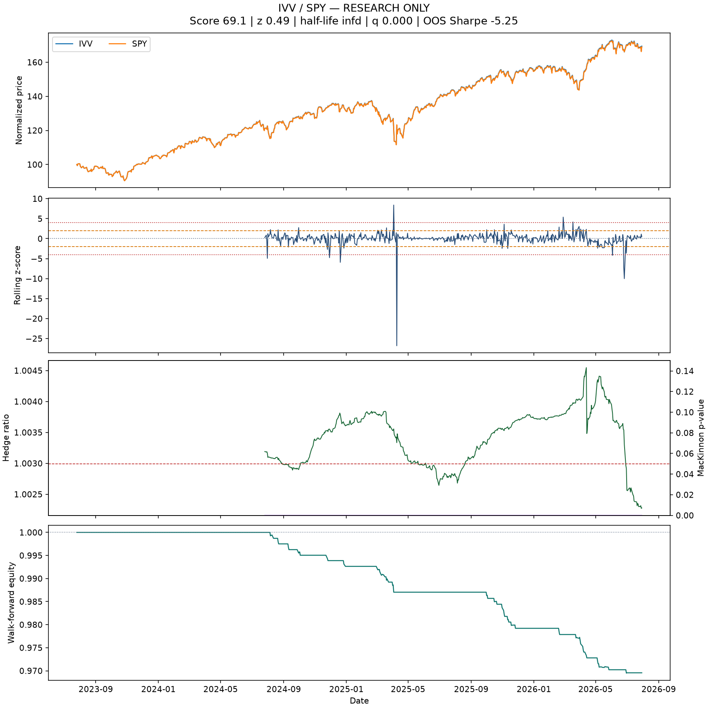
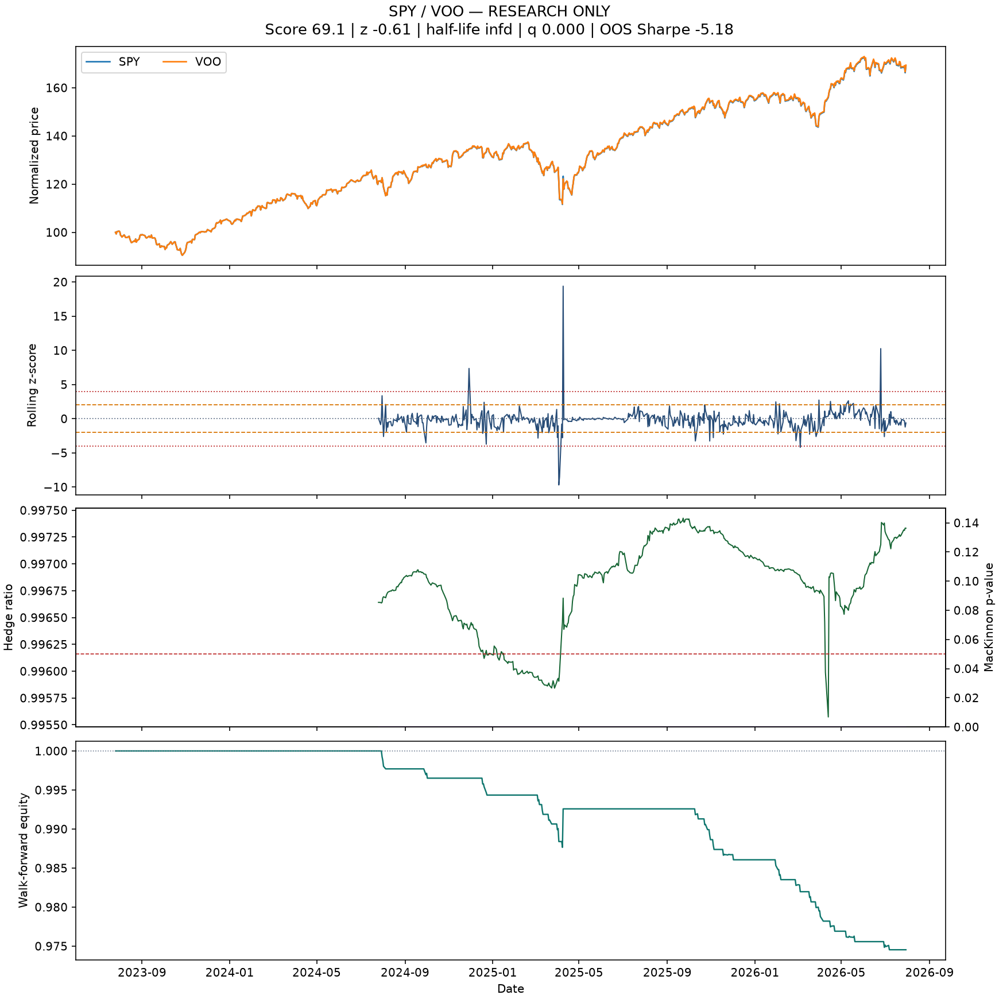
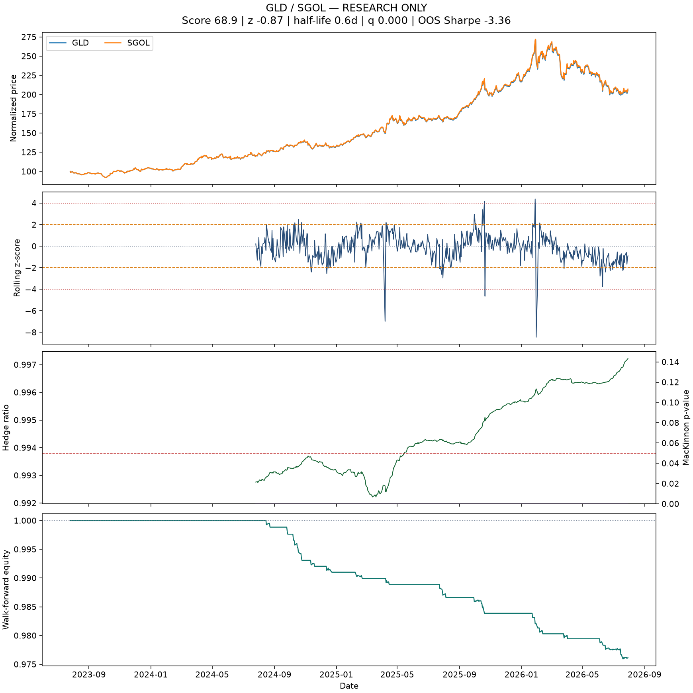
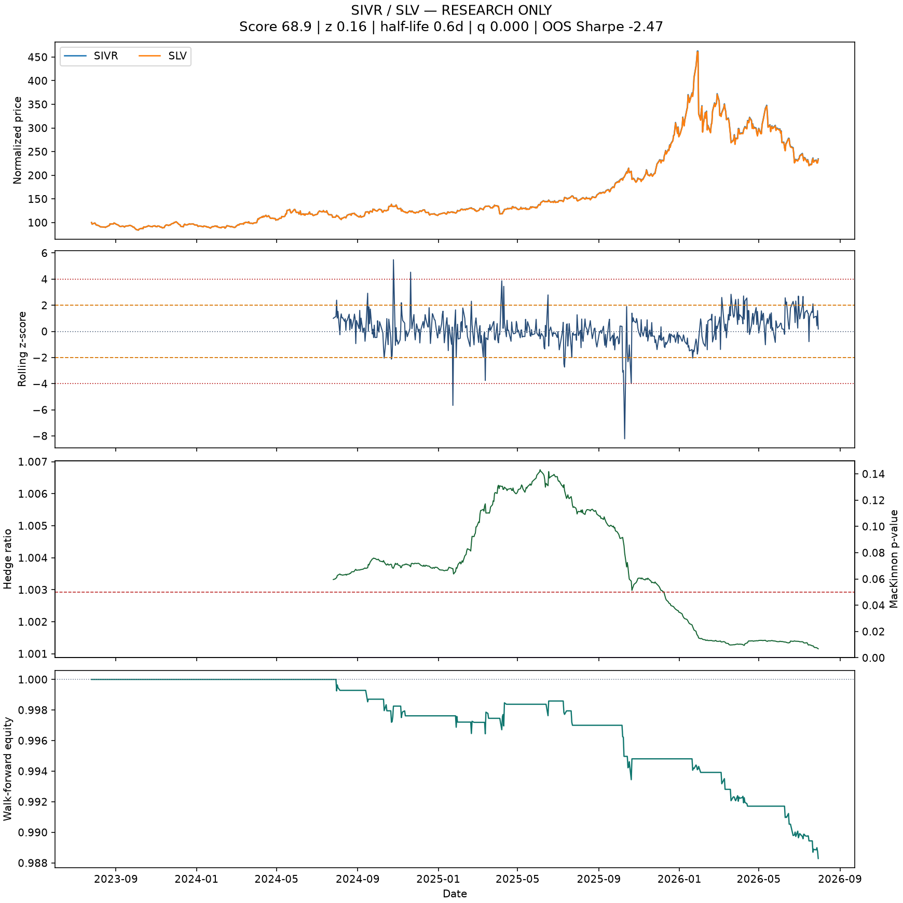
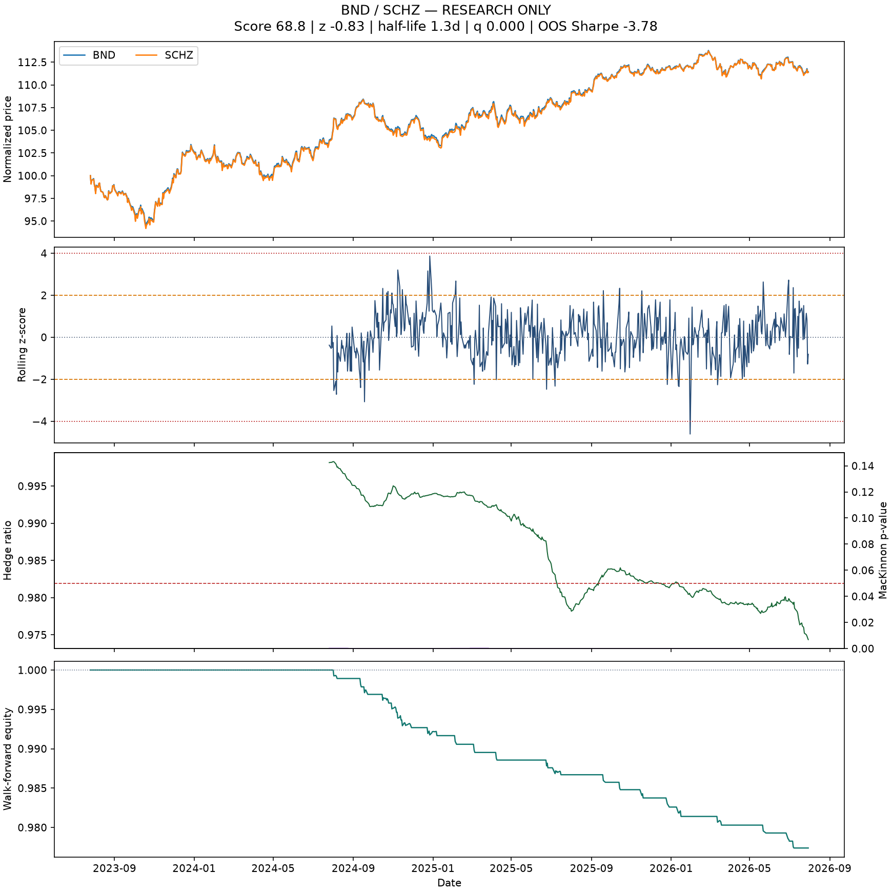

IJH / MDY
RESEARCH ONLY · score 68.0 · setup WAIT

Research diagnostics, not trade recommendations.
RESEARCH ONLY · score 68.0 · setup WAIT

RESEARCH ONLY · score 69.6 · setup WAIT

RESEARCH ONLY · score 69.5 · setup WAIT

RESEARCH ONLY · score 69.5 · setup WAIT

RESEARCH ONLY · score 69.3 · setup WAIT

RESEARCH ONLY · score 69.1 · setup WAIT

RESEARCH ONLY · score 69.1 · setup WAIT

RESEARCH ONLY · score 68.9 · setup WAIT

RESEARCH ONLY · score 68.9 · setup WAIT

RESEARCH ONLY · score 68.8 · setup WAIT
